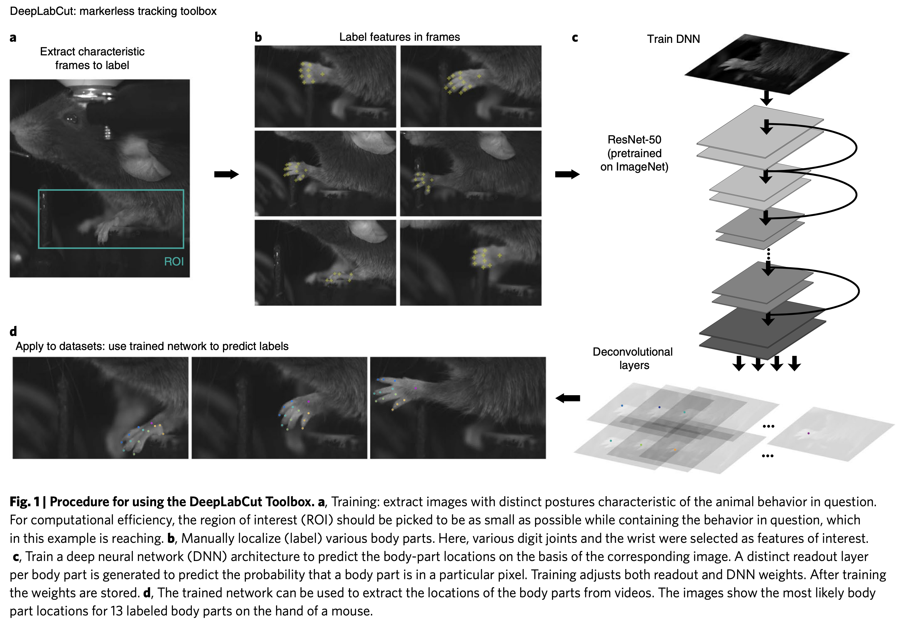
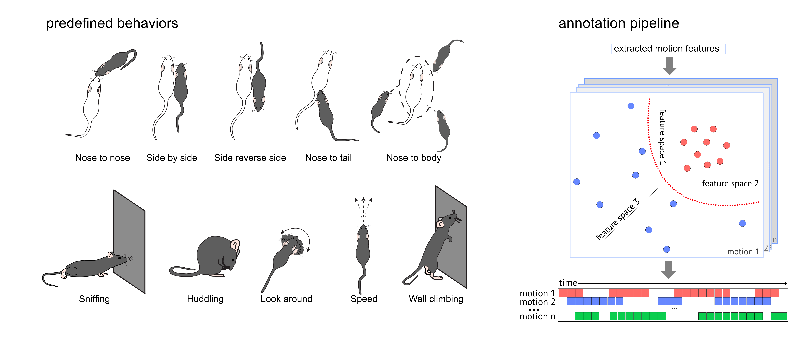
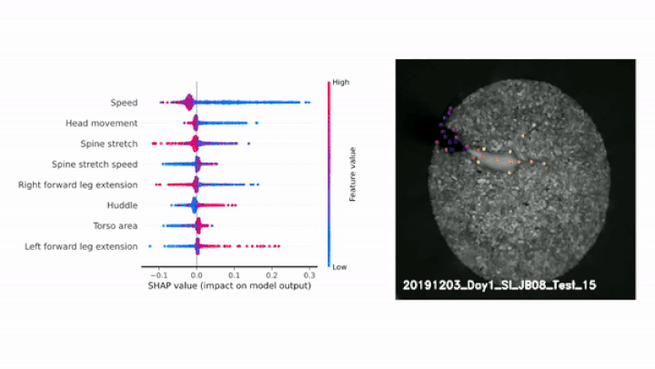

DeepOF is a Python suite to process animal motion tracking data, obtained using DeepLabCut or SLEAP.
The tools we have when it comes to quantifying what animals do have evolved significantly in the last decade. Starting from observational research of animals in the wild, the field of ethology massively shifted towards more simplistic and controlled tests in the lab, often measuring relatively simplistic univariate responses to stimuli.
Recently, advances is computer vision and machine learning allowed researchers to thoroughly track the detailed movement of animals both in the lab and in the wild, without the need for physical labels! Typically, these programs rely on transfer learning from neural networks pretrained on large image datasets, which first extract video frame features. Upon labelling relatively few frames with body parts of interest, the networks can then be fine-tuned to track these body parts across the entire video dataset we have. Below you can see the general workflow of the original DeepLabCut paper. More modern architectures can track keypoints even with no labelling at all, although they remain less accurate than these supervised fine-tuned methods.

By transforming raw video footage into time series of tracked body parts, these approaches (including the aforementioned DeepLabCut and SLEAP) paved the way for analysis tools that can automatically tag and characterize behavior in many innovative ways.
DeepOF is our humble contribution to this endeavor. It offers both supervised and unsupervised annotation pipelines, that allow researchers to test hypotheses regarding experimental conditions such as stress, gene mutations, and sex, in a flexible way.
The included supervised pipeline uses a series of rule-based annotators and pre-trained machine learning models to detect when the animals that are being tracked are displaying any of a set of pre-defined behavioral patterns.

This way, we can tag both individual and social behaviors with just a few commands! Let’s see a basic example:
import deepof.data
my_deepof_project_raw = deepof.data.Project(
project_path=os.path.join("tutorial_files"),
video_path=os.path.join("tutorial_files/Videos/"),
table_path=os.path.join("tutorial_files/Tables/"),
project_name="deepof_example_project",
)
supervised_annotation = my_deepof_project.supervised_annotation()
And that’s it! You have now annotated your videos with a set of pre-trained models that can detect behaviors such as huddling, climbing, and social interactions.
Moreover, DeepOF also provides an unsupervised workflow, that uses deep clustering models to uncover behavioral patterns without prior definition, which can also be run with a few lines of code:
# Continuing from before, we create a set of coordinates to cluster,
# removing unwanted positional and rotational variation
coords = my_deepof_project.get_coords(center="Center", align="Spine_1")
# We then preprocess these coordinates to make them suitable for clustering
preprocessed_coords, global_scaler = coords.preprocess()
# Finally, we cluster these preprocessed coordinates using a deep clustering model
trained_model = my_deepof_project.deep_unsupervised_embedding(
preprocessed_object=preprocessed_coords
)
We then also include an interpretability pipeline to explore what these retrieved clusters are, relying on both Shapley Additive Explanations (SHAP) and direct mappings from clusters to video snippets. Moreover, regardless of the type of analysis you chose, DeepOF has you covered with an extensive set of post-hoc analysis and visualization tools. Below you can see the SHAP results, as well as video snippets, for a huddling cluster enriched in animals that were exposed to chronic stress.

That’s all for now. All in all, DeepOF is a versatile tool that can help you extract meaningful information from your animal behavior data, and we hope you find it as useful as we do!
Where do I go next?
DeepOF is available on GitHub and PyPI. You can detailed installation instructions, as well as documentation and tutorials here. Moreover, there are two publications you can read! One about the software itself, and another one in which we used to characterize a mouse model of chronic stress!